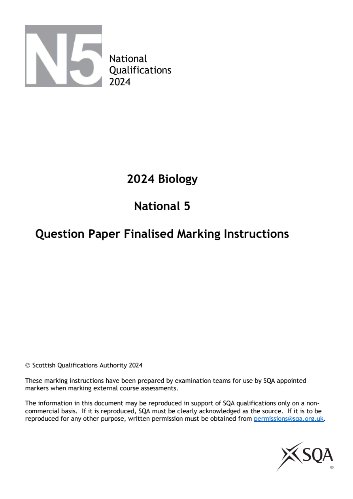
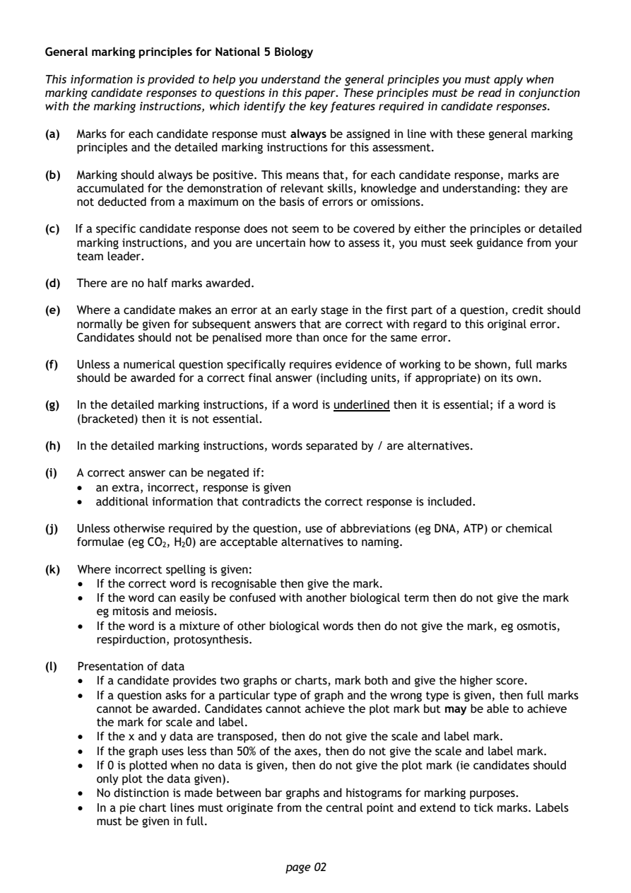
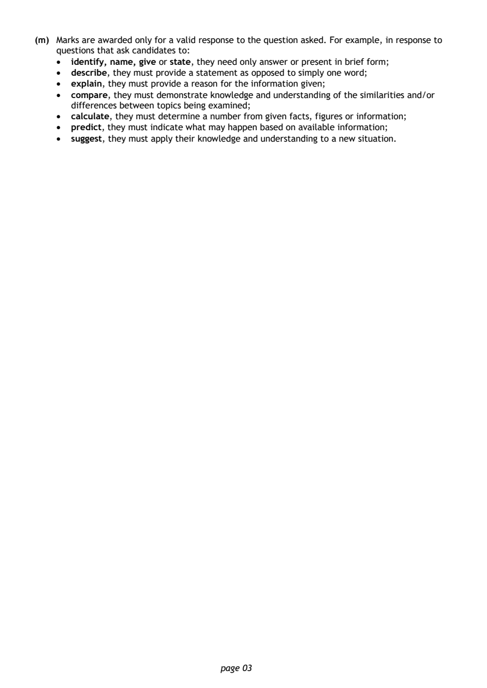
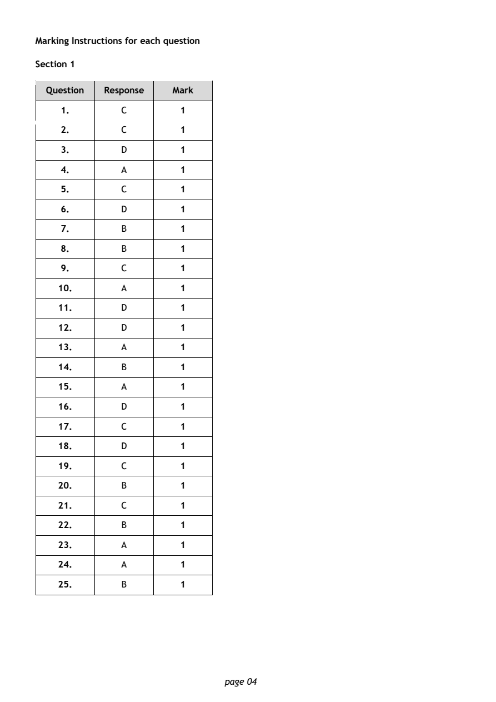
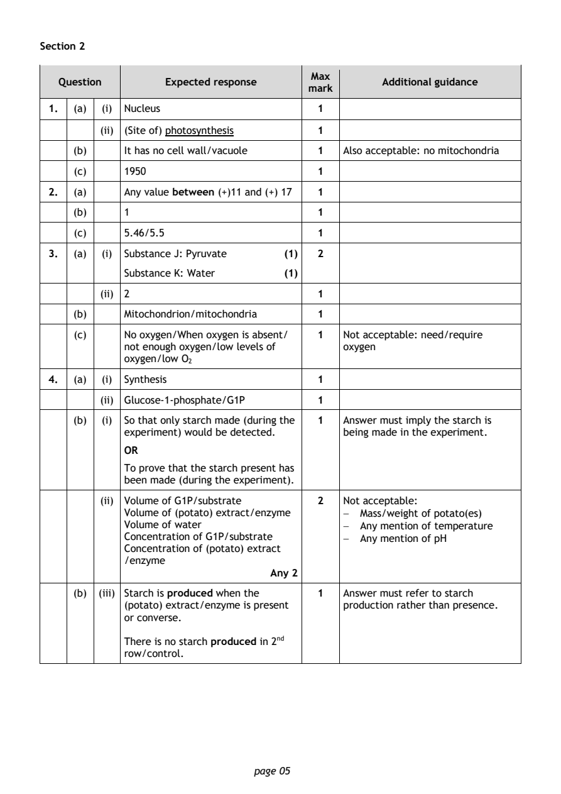
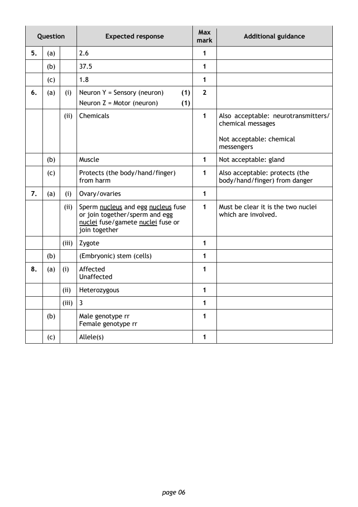
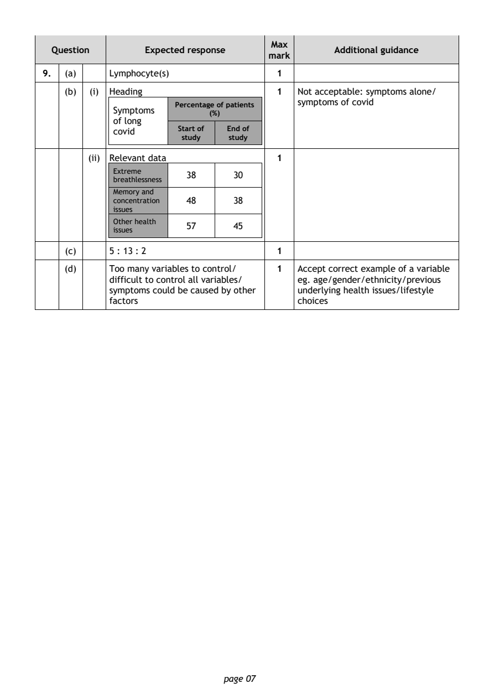
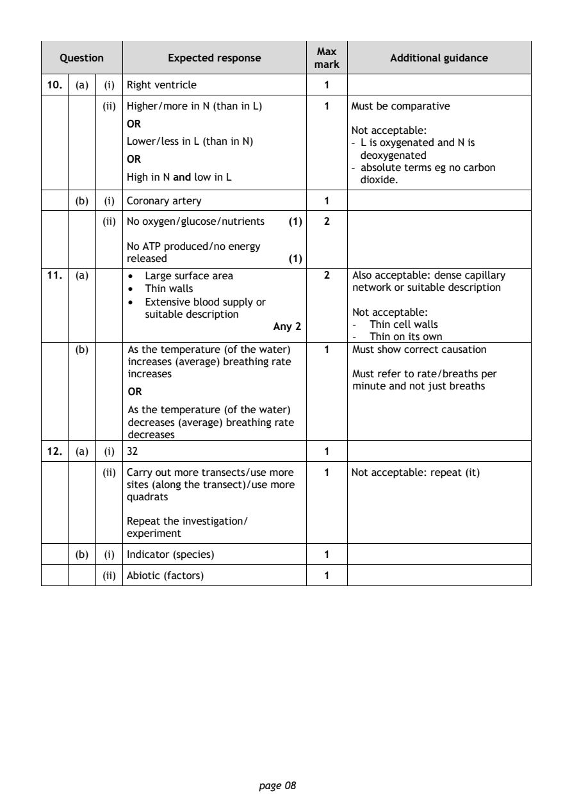
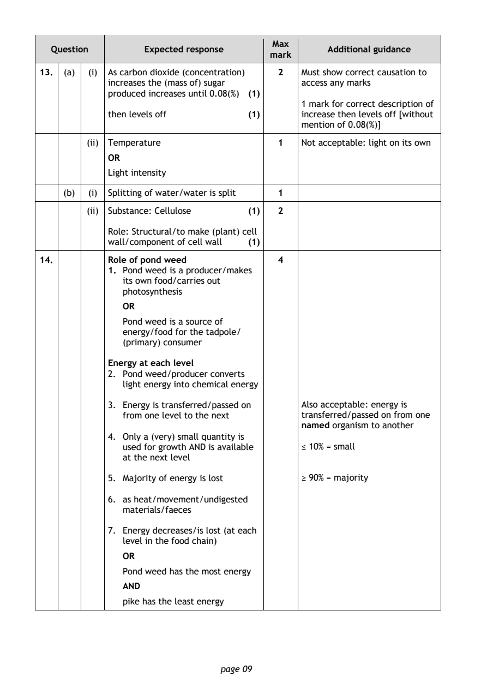
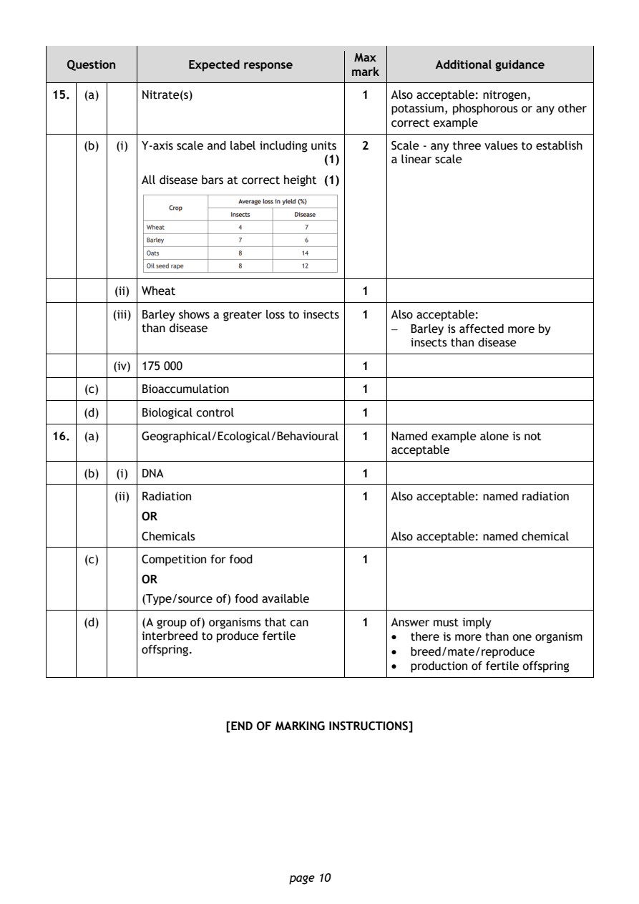

2024 National 5 Biology marking instructions
Source: Scottish Qualifications Authority (SQA) / Qualifications Scotland. This is a StemInteract HTML companion, not an official HTML edition. Selectable text is supplied alongside original page images. Use the images or original PDF for equations, powers, fractions, vector notation, tables and diagrams; text extraction cannot fully preserve mathematical layout.
Jump to a question
PDF page 1

Selectable page text
National
Qualifications
2024
2024 Biology
National 5
Question Paper Finalised Marking Instructions
© Scottish Qualifications Authority 2024
These marking instructions have been prepared by examination teams for use by SQA appointed
markers when marking external course assessments.
The information in this document may be reproduced in support of SQA qualifications only on a non-
commercial basis. If it is reproduced, SQA must be clearly acknowledged as the source. If it is to be
reproduced for any other purpose, written permission must be obtained from permissions@sqa.org.uk.PDF page 2

Selectable page text
General marking principles for National 5 Biology
This information is provided to help you understand the general principles you must apply when
marking candidate responses to questions in this paper. These principles must be read in conjunction
with the marking instructions, which identify the key features required in candidate responses.
(a) Marks for each candidate response must always be assigned in line with these general marking
principles and the detailed marking instructions for this assessment.
(b) Marking should always be positive. This means that, for each candidate response, marks are
accumulated for the demonstration of relevant skills, knowledge and understanding: they are
not deducted from a maximum on the basis of errors or omissions.
(c) If a specific candidate response does not seem to be covered by either the principles or detailed
marking instructions, and you are uncertain how to assess it, you must seek guidance from your
team leader.
(d) There are no half marks awarded.
(e) Where a candidate makes an error at an early stage in the first part of a question, credit should
normally be given for subsequent answers that are correct with regard to this original error.
Candidates should not be penalised more than once for the same error.
(f) Unless a numerical question specifically requires evidence of working to be shown, full marks
should be awarded for a correct final answer (including units, if appropriate) on its own.
(g) In the detailed marking instructions, if a word is underlined then it is essential; if a word is
(bracketed) then it is not essential.
(h) In the detailed marking instructions, words separated by / are alternatives.
(i) A correct answer can be negated if:
• an extra, incorrect, response is given
• additional information that contradicts the correct response is included.
(j) Unless otherwise required by the question, use of abbreviations (eg DNA, ATP) or chemical
formulae (eg CO , H 0) are acceptable alternatives to naming.
2 2
(k) Where incorrect spelling is given:
• If the correct word is recognisable then give the mark.
• If the word can easily be confused with another biological term then do not give the mark
eg mitosis and meiosis.
• If the word is a mixture of other biological words then do not give the mark, eg osmotis,
respirduction, protosynthesis.
(l) Presentation of data
• If a candidate provides two graphs or charts, mark both and give the higher score.
• If a question asks for a particular type of graph and the wrong type is given, then full marks
cannot be awarded. Candidates cannot achieve the plot mark but may be able to achieve
the mark for scale and label.
• If the x and y data are transposed, then do not give the scale and label mark.
• If the graph uses less than 50% of the axes, then do not give the scale and label mark.
• If 0 is plotted when no data is given, then do not give the plot mark (ie candidates should
only plot the data given).
• No distinction is made between bar graphs and histograms for marking purposes.
• In a pie chart lines must originate from the central point and extend to tick marks. Labels
must be given in full.
page 02PDF page 3

Selectable page text
(m) Marks are awarded only for a valid response to the question asked. For example, in response to
questions that ask candidates to:
• identify, name, give or state, they need only answer or present in brief form;
• describe, they must provide a statement as opposed to simply one word;
• explain, they must provide a reason for the information given;
• compare, they must demonstrate knowledge and understanding of the similarities and/or
differences between topics being examined;
• calculate, they must determine a number from given facts, figures or information;
• predict, they must indicate what may happen based on available information;
• suggest, they must apply their knowledge and understanding to a new situation.
page 03PDF page 4
Paper 1, Question 1Paper 1, Question 2Paper 1, Question 3Paper 1, Question 4Paper 1, Question 5Paper 1, Question 6Paper 1, Question 7Paper 1, Question 8Paper 1, Question 9Paper 1, Question 10Paper 1, Question 11Paper 1, Question 12Paper 1, Question 13Paper 1, Question 14Paper 1, Question 15Paper 1, Question 16Paper 1, Question 17Paper 1, Question 18Paper 1, Question 19Paper 1, Question 20Paper 1, Question 21Paper 1, Question 22Paper 1, Question 23Paper 1, Question 24Paper 1, Question 25
Selectable page text
Marking Instructions for each question
Section 1
Question Response Mark
1. C 1
2. C 1
3. D 1
4. A 1
5. C 1
6. D 1
7. B 1
8. B 1
9. C 1
10. A 1
11. D 1
12. D 1
13. A 1
14. B 1
15. A 1
16. D 1
17. C 1
18. D 1
19. C 1
20. B 1
21. C 1
22. B 1
23. A 1
24. A 1
25. B 1
page 04PDF page 5
Paper 2, Question 1Paper 2, Question 2Paper 2, Question 3Paper 2, Question 4
Selectable page text
Section 2
Max
Question Expected response Additional guidance
mark
1. (a) (i) Nucleus 1
(ii) (Site of) photosynthesis 1
(b) It has no cell wall/vacuole 1 Also acceptable: no mitochondria
(c) 1950 1
2. (a) Any value between (+)11 and (+) 17 1
(b) 1 1
(c) 5.46/5.5 1
3. (a) (i) Substance J: Pyruvate (1) 2
Substance K: Water (1)
(ii) 2 1
(b) Mitochondrion/mitochondria 1
(c) No oxygen/When oxygen is absent/ 1 Not acceptable: need/require
not enough oxygen/low levels of oxygen
oxygen/low O
2
4. (a) (i) Synthesis 1
(ii) Glucose-1-phosphate/G1P 1
(b) (i) So that only starch made (during the 1 Answer must imply the starch is
experiment) would be detected. being made in the experiment.
OR
To prove that the starch present has
been made (during the experiment).
(ii) Volume of G1P/substrate 2 Not acceptable:
Volume of (potato) extract/enzyme − Mass/weight of potato(es)
Volume of water − Any mention of temperature
Concentration of G1P/substrate − Any mention of pH
Concentration of (potato) extract
/enzyme
Any 2
(b) (iii) Starch is produced when the 1 Answer must refer to starch
(potato) extract/enzyme is present production rather than presence.
or converse.
There is no starch produced in 2ⁿ^{d}
row/control.
page 05PDF page 6
Paper 2, Question 5Paper 2, Question 6Paper 2, Question 7Paper 2, Question 8
Selectable page text
Max
Question Expected response Additional guidance
mark
5. (a) 2.6 1
(b) 37.5 1
(c) 1.8 1
6. (a) (i) Neuron Y = Sensory (neuron) (1) 2
Neuron Z = Motor (neuron) (1)
(ii) Chemicals 1 Also acceptable: neurotransmitters/
chemical messages
Not acceptable: chemical
messengers
(b) Muscle 1 Not acceptable: gland
(c) Protects (the body/hand/finger) 1 Also acceptable: protects (the
from harm body/hand/finger) from danger
7. (a) (i) Ovary/ovaries 1
(ii) Sperm nucleus and egg nucleus fuse 1 Must be clear it is the two nuclei
or join together/sperm and egg which are involved.
nuclei fuse/gamete nuclei fuse or
join together
(iii) Zygote 1
(b) (Embryonic) stem (cells) 1
8. (a) (i) Affected 1
Unaffected
(ii) Heterozygous 1
(iii) 3 1
(b) Male genotype rr 1
Female genotype rr
(c) Allele(s) 1
page 06PDF page 7
Paper 2, Question 9
Selectable page text
Max
Question Expected response Additional guidance
mark
9. (a) Lymphocyte(s) 1
(b) (i) Heading 1 Not acceptable: symptoms alone/
symptoms of covid
Percentage of patients
Symptoms
(%)
of long
covid Start of End of
study study
(ii) Relevant data 1
Extreme
38 30
breathlessness
Memory and
concentration 48 38
issues
Other health
57 45
issues
(c) 5 : 13 : 2 1
(d) Too many variables to control/ 1 Accept correct example of a variable
difficult to control all variables/ eg. age/gender/ethnicity/previous
symptoms could be caused by other underlying health issues/lifestyle
factors choices
page 07PDF page 8
Paper 2, Question 10Paper 2, Question 11Paper 2, Question 12
Selectable page text
Max
Question Expected response Additional guidance
mark
10. (a) (i) Right ventricle 1
(ii) Higher/more in N (than in L) 1 Must be comparative
OR
Not acceptable:
Lower/less in L (than in N) - L is oxygenated and N is
deoxygenated
OR
- absolute terms eg no carbon
High in N and low in L dioxide.
(b) (i) Coronary artery 1
(ii) No oxygen/glucose/nutrients (1) 2
No ATP produced/no energy
released (1)
11. (a) • Large surface area 2 Also acceptable: dense capillary
• Thin walls network or suitable description
• Extensive blood supply or
suitable description Not acceptable:
Any 2 - Thin cell walls
- Thin on its own
(b) As the temperature (of the water) 1 Must show correct causation
increases (average) breathing rate
increases Must refer to rate/breaths per
minute and not just breaths
OR
As the temperature (of the water)
decreases (average) breathing rate
decreases
12. (a) (i) 32 1
(ii) Carry out more transects/use more 1 Not acceptable: repeat (it)
sites (along the transect)/use more
quadrats
Repeat the investigation/
experiment
(b) (i) Indicator (species) 1
(ii) Abiotic (factors) 1
page 08PDF page 9
Paper 2, Question 13Paper 2, Question 14
Selectable page text
Max
Question Expected response Additional guidance
mark
13. (a) (i) As carbon dioxide (concentration) 2 Must show correct causation to
increases the (mass of) sugar access any marks
produced increases until 0.08(%) (1)
1 mark for correct description of
then levels off (1) increase then levels off [without
mention of 0.08(%)]
(ii) Temperature 1 Not acceptable: light on its own
OR
Light intensity
(b) (i) Splitting of water/water is split 1
(ii) Substance: Cellulose (1) 2
Role: Structural/to make (plant) cell
wall/component of cell wall (1)
14. Role of pond weed 4
1. Pond weed is a producer/makes
its own food/carries out
photosynthesis
OR
Pond weed is a source of
energy/food for the tadpole/
(primary) consumer
Energy at each level
2. Pond weed/producer converts
light energy into chemical energy
3. Energy is transferred/passed on Also acceptable: energy is
from one level to the next transferred/passed on from one
named organism to another
4. Only a (very) small quantity is
used for growth AND is available ≤ 10% = small
at the next level
5. Majority of energy is lost ≥ 90% = majority
6. as heat/movement/undigested
materials/faeces
7. Energy decreases/is lost (at each
level in the food chain)
OR
Pond weed has the most energy
AND
pike has the least energy
page 09PDF page 10
Paper 2, Question 15Paper 2, Question 16
Selectable page text
Max
Question Expected response Additional guidance
mark
15. (a) Nitrate(s) 1 Also acceptable: nitrogen,
potassium, phosphorous or any other
correct example
(b) (i) Y-axis scale and label including units 2 Scale - any three values to establish
(1) a linear scale
All disease bars at correct height (1)
(ii) Wheat 1
(iii) Barley shows a greater loss to insects 1 Also acceptable:
than disease − Barley is affected more by
insects than disease
(iv) 175 000 1
(c) Bioaccumulation 1
(d) Biological control 1
16. (a) Geographical/Ecological/Behavioural 1 Named example alone is not
acceptable
(b) (i) DNA 1
(ii) Radiation 1 Also acceptable: named radiation
OR
Chemicals Also acceptable: named chemical
(c) Competition for food 1
OR
(Type/source of) food available
(d) (A group of) organisms that can 1 Answer must imply
interbreed to produce fertile • there is more than one organism
offspring. • breed/mate/reproduce
• production of fertile offspring
[END OF MARKING INSTRUCTIONS]
page 10